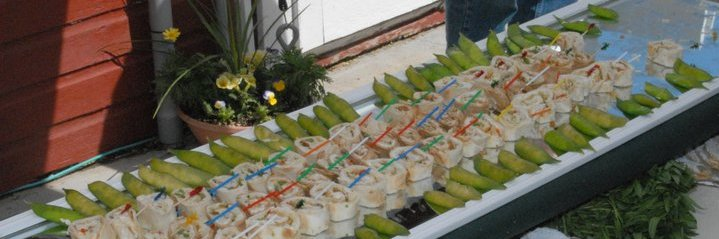
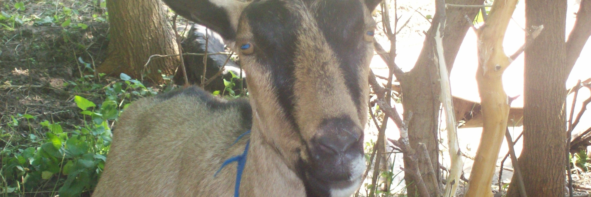

The Farm

Our Products
Traditional farmstead cheese making methods are used to create fresh chevre. We make cheese in small batches with special attention to details which results in a mild, rich cheese complemented with organic seasonings. our cheese »
Employee of the Month
Rosie teaches Goat Milking 101. When visitors come, she struts out and hops up on the stanchion to be milked. Rosie is a 6 year old Alpine and typically only has a single kid -- although always very special ones. Wise, sensitive and always gentle. about our goats »